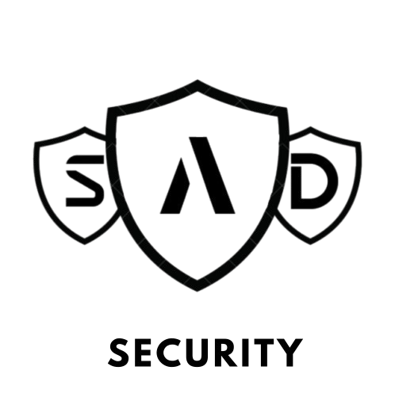

We are a small, dedicated development team committed to making digital communication safer and more responsible. Our work is part of a larger, long-term initiative that is still in the early stages of development and is expected to be completed within the next four years. More informations
At the heart of our efforts is Safe-Drive – an AI-based solution designed to detect toxic content such as hate speech, discrimination, or targeted harassment in comments, chats, and digital platforms. It helps platform operators and developers moderate content effectively – without restricting healthy and constructive discourse.
The Need
The idea for Safe-Drive arose from a growing concern: the misuse of online communication is increasing. Intelligent tools are required to identify harmful behavior early and reliably. Our system is based on a custom-built classifier that has been trained, tested, and refined over many months.
“Good technology solves problems – responsible technology identifies them early.”